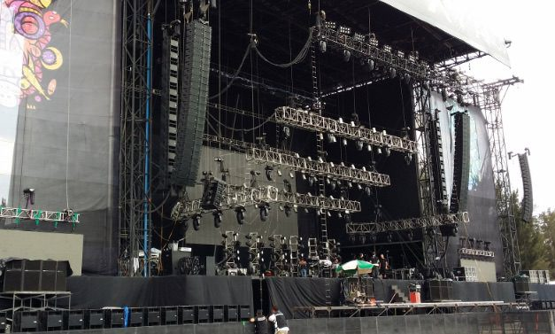

Sobre o Evento
O FestMusic 2026 é um festival de música ao vivo que acontece nos dias 13 e 14 de junho de 2026 no Parque Eduardo VII, em Lisboa. Contará com bandas nacionais e internacionais, workshops de música e muito mais!
Venha viver dois dias inesquecíveis com artistas como os The Black Mamba, Expensive Soul, e surpresas especiais. Para todos os gostos e idades!

Notícias
Agenda do Evento
| Hora | Atividade | Local |
|---|---|---|
| 14:00 | Abertura dos portões | Entrada principal |
| 15:00 | Atuação: The Black Mamba | Palco Principal |
| 16:30 | Workshop de Guitarra | Palco Secundário |
| 18:00 | Debate: O Futuro da Música Portuguesa | Sala de Conferências |
| 20:00 | Atuação: Expensive Soul | Palco Principal |
| 22:00 | Atuação Surpresa | Palco Principal |
Eventos Semelhantes
Contactos
Email: geralxyz@festmusic2025.pt
Telefone: +351 xxy xxz xxk
Morada: Parque Eduardo VII, 1070-051 Lisboa